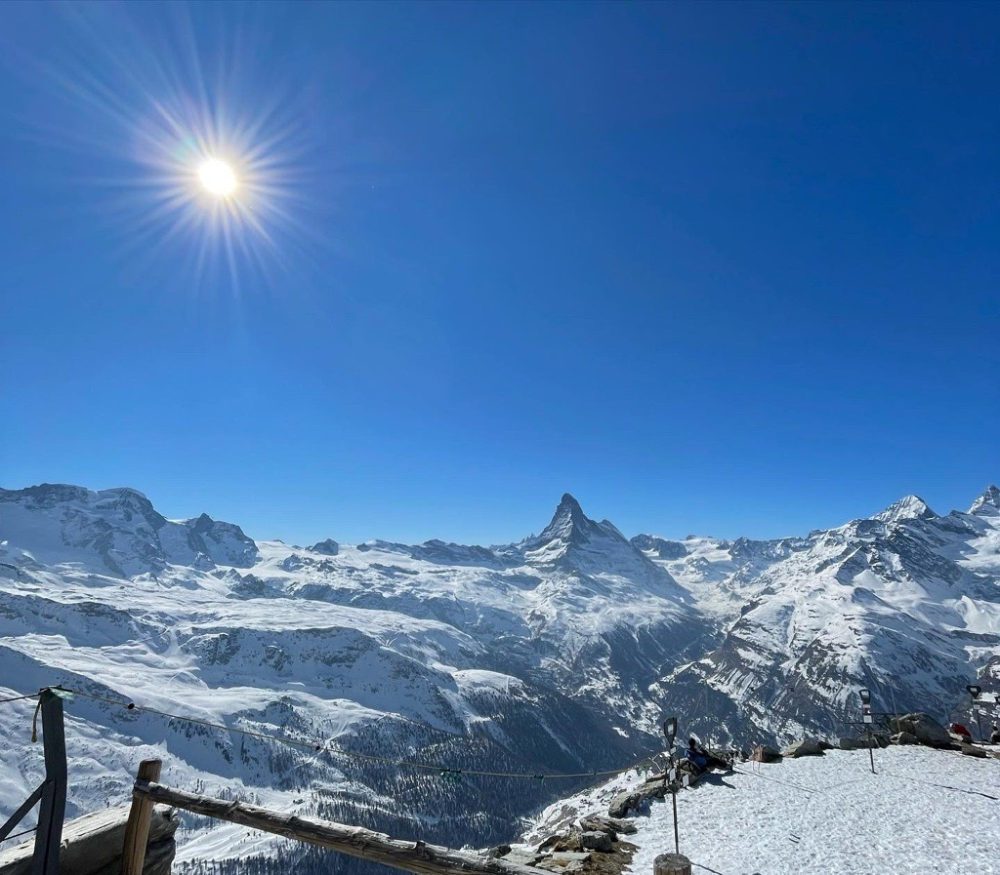
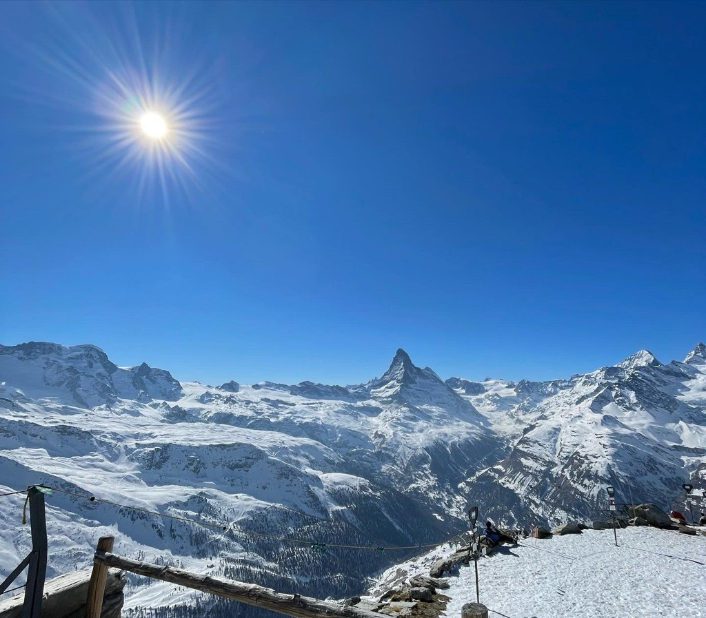

Outside of the Office

Outside of work and school, I love spending time outdoors and taking advantage of everything the Seattle area has to offer. In the summer, you’ll find me golfing, hiking, playing pickleball, and enjoying water activities—basically anything that lets me soak up the sun. I’m also currently training for my first marathon, which I’ll be running in October 2025.
I’m an avid traveler who enjoys exploring new countries, experiencing different cultures, and trying local food wherever I go. Travel is one of my favorite ways to recharge and gain fresh perspectives.
In the winter, I hit the slopes as much as possible—Crystal Mountain is my go-to for skiing. When I’m not outside, I love following sports. I’m a dedicated fan of the Washington Huskies, the New York Yankees, and the New York Knicks.
Gallery
 
